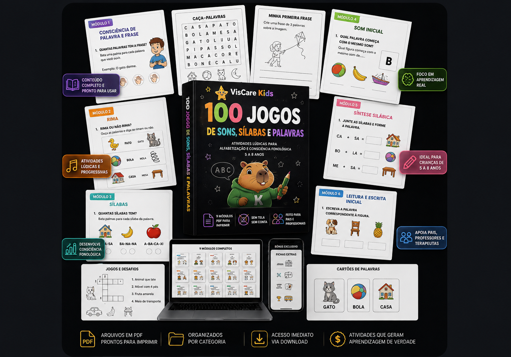
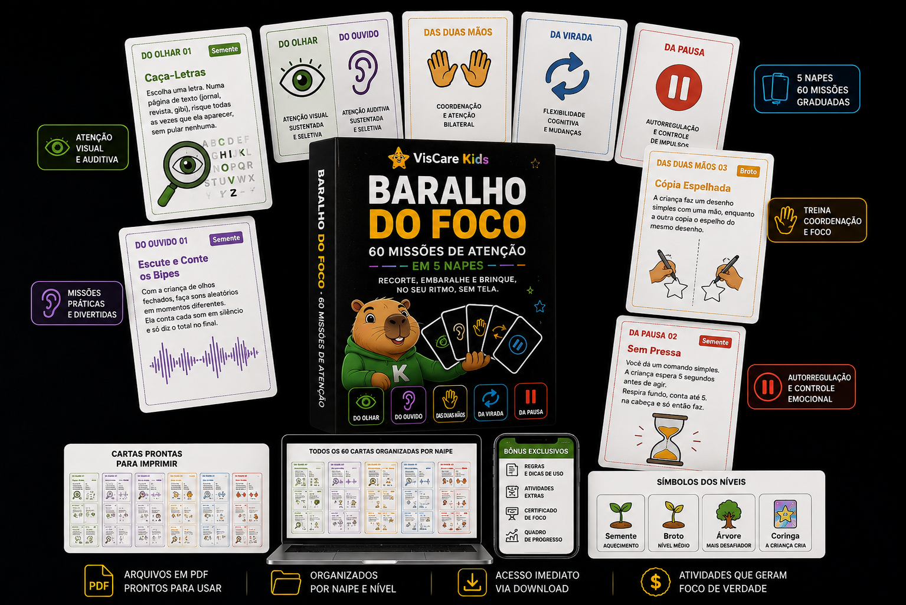

Acompanhe cada paciente entre as sessões, com dados reais
Fonoaudiólogos, psicólogos, psicopedagogos, terapeutas ocupacionais e professores usam a Ilha do Foco e o Aventura das Letras pra observar atenção, controle inibitório, memória de trabalho e mais — direto da tela do paciente.
Acompanhe gratuitamente até 3 crianças vinculadas pela família, ou crie perfis próprios de pacientes.

Para fonoaudiólogos, psicólogos e professores
Acompanhe seus pacientes entre as sessões, com dados reais de cada interação.
👧 Sofia
🛡️ Índice de controle inibitório
🔬 Análise fonética
📅 Adesão (últimas 4 semanas)
✨ Resumo clínico
"Sofia manteve uma frequência excelente nas últimas semanas (100% das metas atingidas). Troca fonológica mais frequente: R → L (3 ocorrências). O índice de controle inibitório está em 77/100, com impulsividade ocasional."
O profissional cria a própria conta, mas só enxerga algo depois que você gera um código de convite e aprova o vínculo com seu filho — o acesso pode ser revogado quando você quiser.
Cada relatório tem base metodológica
Não são números soltos — cada índice se inspira em instrumentos e conceitos já usados na avaliação clínica.
São dados comportamentais de jogo, não escores psicométricos — complementam o acompanhamento entre sessões e não substituem uma avaliação formal.
O que cada profissional pode observar
O app não diagnostica nem avalia — os dados de cada jogo podem apoiar diversos profissionais de forma diferente, sempre como ponto de partida pra conversa, nunca como resultado pronto.
🗣️ Fonoaudiólogo / logopedista
- ✓ Atenção ao ouvir o som-alvo, e atenção sustentada nas atividades de busca visual
- ✓ Compreensão e execução de instruções
- ✓ Memória de trabalho
- ✓ Discriminação e associação de sons, sílabas e palavras
- ✓ Reconhecimento de sílabas, correspondência som-letra e formação de palavras
- ✓ Sinais de impulsividade nas respostas
- ✓ Escolher a resposta que mantém a conversa, sem interromper o outro
- ✓ Dificuldade específica por atividade, e evolução ao longo das sessões
🧠 Psicólogo
- ✓ Atenção sustentada
- ✓ Controle inibitório e tolerância à espera
- ✓ Reconhecimento de emoções em situações do dia a dia, e variedade de estratégias de autorregulação usadas
- ✓ Se a criança tenta de novo ou pede ajuda em vez de desistir
- ✓ Capacidade de seguir regras, inclusive quando a regra muda no meio da atividade
- ✓ Eficiência de planejamento e tempo de deliberação antes de agir
- ✓ Evolução ao longo das sessões
📚 Psicopedagogo
- ✓ Consciência silábica
- ✓ Associação entre letras, sílabas e palavras
- ✓ Atenção e memória
- ✓ Organização de passos até atingir um objetivo
- ✓ Em qual atividade específica a criança tem mais ou menos facilidade
- ✓ Acompanhamento e comparação do progresso ao longo do tempo
🧩 Terapeuta ocupacional
- ✓ Atenção
- ✓ Planejamento — organizar uma sequência de passos até um objetivo, sem cronômetro nem tela de fracasso
- ✓ Controle de impulsos
- ✓ Seguimento de regras
- ✓ Frequência de abandono de tarefas difíceis e pedidos de ajuda
👩🏫 Professores
- ✓ Reforço de habilidades trabalhadas em sala
- ✓ Atividades complementares de leitura e atenção
- ✓ Acompanhamento da evolução entre as sessões
👨👩👧 Pais
- ✓ Em quais atividades seu filho tem mais ou menos facilidade
- ✓ Evolução ao longo do tempo
- ✓ Quais habilidades estão sendo trabalhadas em cada jogo
São observações de comportamento em jogo, não avaliação clínica — pontos de partida pra conversa com quem acompanha a criança, não resultados prontos. No Termômetro das Emoções não existe "emoção certa", e em Cestas da Ilha o app é desenhado pra reduzir gatilhos de frustração, nunca pra provocá-los.
Plano para profissionais
Acompanhe pacientes com dados reais entre as sessões
- Grátis: acompanhe até 3 crianças vinculadas pela família
- Crie perfis próprios de pacientes, sem que a família precise ter conta
- Login por código — use na clínica e em casa
- Até 8 pacientes incluídos, +R$17,90 por paciente extra
- Relatórios clínicos completos de cada paciente
pagamento único · sem renovação automática
Criar conta profissionalPerfis próprios exigem verificação do registro profissional (CRFa, CRP, etc.) — o vínculo gratuito por convite não precisa.
Prefere começar com material pronto pra sessão?
Sem esperar convite nem criar perfil de paciente — é um PDF com licença de uso profissional, que você baixa agora e já leva pra próxima sessão com quantos pacientes precisar.
100 atividades prontas pra sessão

- 100 atividades de consciência fonológica e alfabetização, em ordem de dificuldade
- Licença de uso profissional — use com todos os seus pacientes
- Cada atividade indica o jogo digital equivalente do Aventura das Letras
pagamento único · PDF por e-mail
60 missões de atenção em formato carta

- 60 cartas de missões curtas de atenção, prontas pra imprimir e cortar
- Licença de uso profissional — use com todos os seus pacientes
- Cada carta indica o jogo digital equivalente da Ilha do Foco
pagamento único · PDF por e-mail
Os 2 materiais, uso profissional
- 100 Jogos de Sons, Sílabas e Palavras completo
- Baralho do Foco completo (60 cartas)
- Licença de uso profissional nos 2 materiais
pagamento único · economize R$17 comprando junto